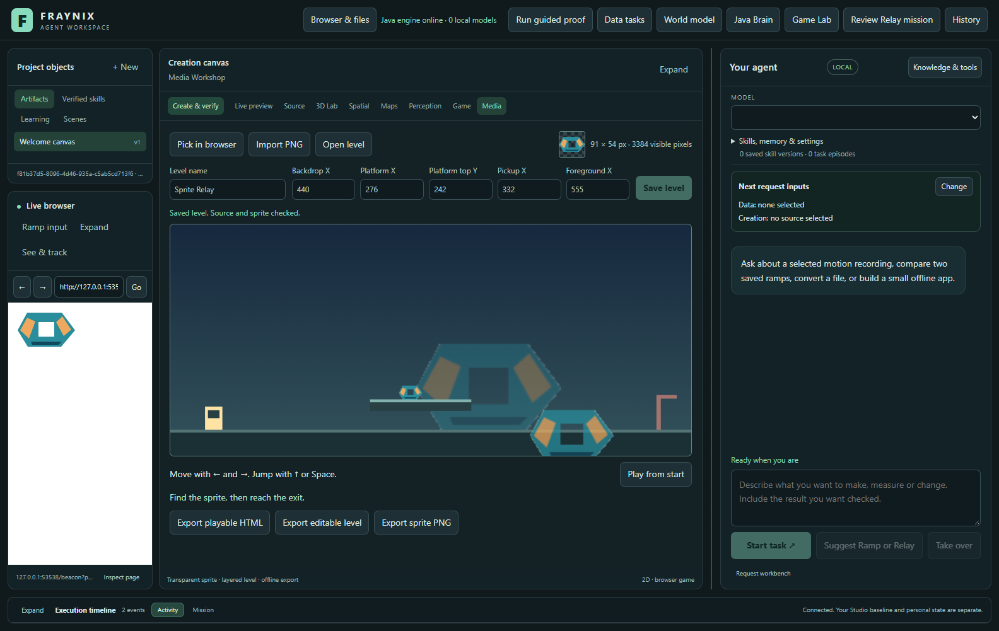
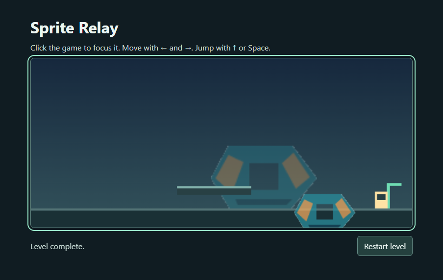

Turn an image into a sprite and a playable level
Pick a browser graphic or import a PNG, layer the sprite and play the exported level offline.
The 91 × 54 px sprite kept its transparent opening. Both the desktop build and standalone export passed collision, platform landing, pickup and exit checks.

The original browser graphic and the layered Media Workshop level

The exported level completes in a separate offline window
System files
Open source